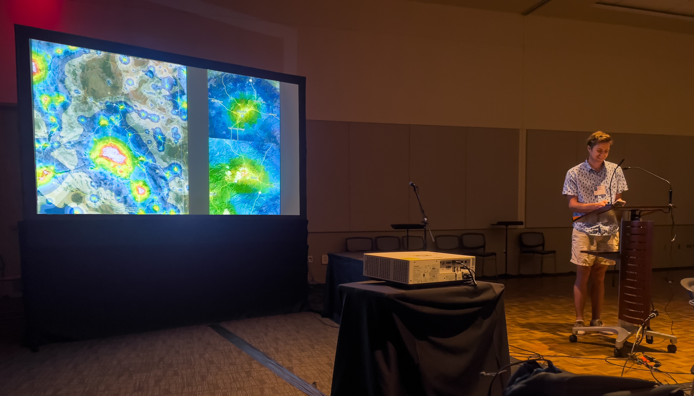

Hi, I'm Brad.
I'm an accelerated graduate student at Arizona State University, currently earning my Bachelor's (2024) and Master's (2025) degrees in Computer Science. I have a passion for programming and for building interesting and useful things with technology, as well as for preserving our night sky through the thoughtful management of artificial light at night. I have strong programming experience, experience working with--as well as leading--teams of several different sizes, and pride myself on my ability to communicate complex concepts effectively to many audiences. I have acted as a liaison between the Data Team and both management and our data partner in my previous position at OFW, and present regularly on the topic of light pollution in Arizona to a variety of groups of varying familiarity.
I'm currently wrapping up a year-long Toxicity Mitigation Capstone Project at ASU, in which I, alongside four peers and two researchers, am developing an application to facilitate more productive communication in the scientific peer review process through the use of increasingly relevant AI technologies such as large language models. I also collect and analyze regional light pollution data as part of my ongoing Local Light Pollution Analysis project in which I continue to implement data analysis and machine learning techniques to provide actionable insights to local governments and lighting authorities.
In my free time, I enjoy gardening, southwestern landscape/astrophotography, cycling, and when the weather doesn't favor the above, I enjoy playing Factorio or Cities: Skylines.